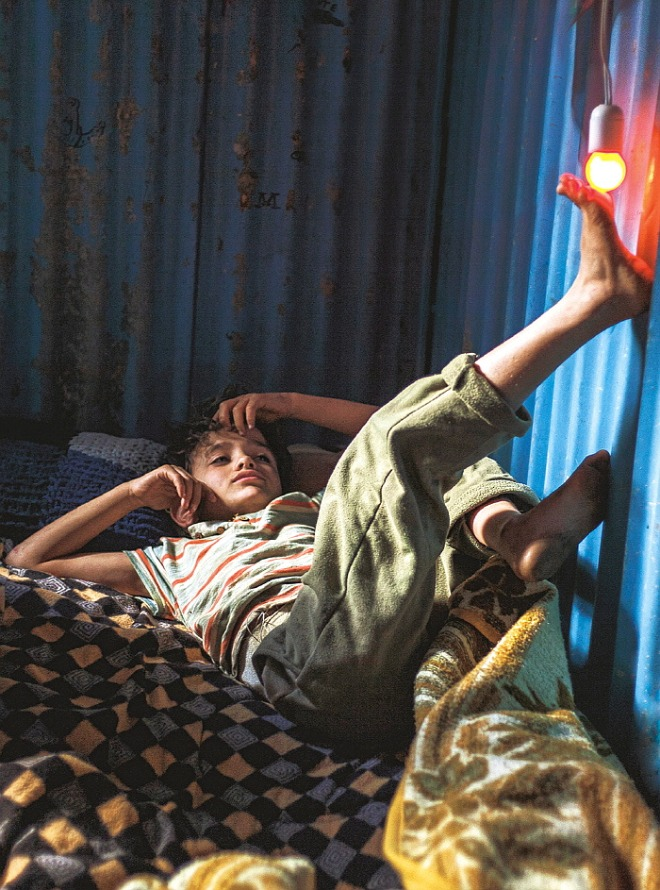
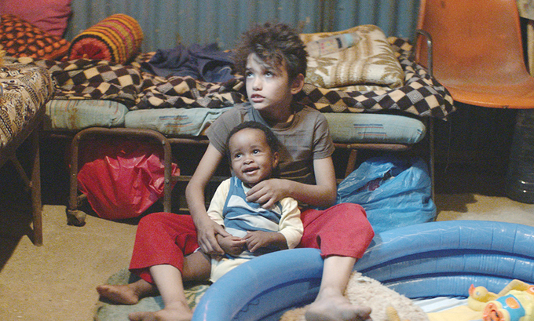
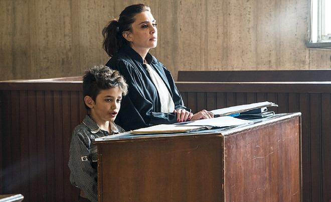

|

“ 존중받고 사랑받고 싶었어요. ”
주인공 '자인'은 레바논의 한 빈민가에 살고 있는 어린 소년이다. '자인'의 삶은 험난하다.
'자인'이 몸을 뉘이는 집은 수많은 형제들을 재우기에는 턱없이 좁아 보인다.
학교에 다닐 나이가 되었지만 당연하게도 가지 못한다.
대신 부모의 이름을 대고 타온 마약성 진통제를 물 타 주스라고 속여 길거리에서 파는 일을 한다.
그러던 중 고작 열한 살이 된 여동생 '사하르'가 나이 많은 '아사드'의 아내로 가게될 것이라는
이야기를 듣고 격렬히 반대하지만 열두 살 소년이 어른들의 힘을 이기기에는 역 부족이었다.
'자인'은 그 길로 집을 나와버리고, 막연히 길을 헤매던 중 난민 여성 '라힐'을 만나
그녀의 아이 '요나스'를 대신 돌봐주는 조건으로 '라힐'의 집에 머무르게 된다.
<가버나움>의 출연진들은 모두 전문 연기자가 아니다.
자인 역의 자인 알 라피아는 시리아 난민 소년이며,
라힐을 분한 요르다노스 시퍼라우은 실제 불법 체류자로,
촬영 중 체포되었으나 나딘 라바키 감독의 개입으로
풀려나고 촬영을 무사히 마칠 수 있었다. |
<가버나움>은 수많은 키워드와 문제 의식을 담고 있다. 그 중 개인적으로 가장 중요하게 생각하는 키워드를 꼽으라면 아동학대,
난민, 조혼이라고 할 수 있을 것 같다. 영화에서 아동학대는 영화 전반에 걸쳐 다양한 방식으로 등장한다. 사실 자인과 자인 주변의
등장인물들이 사는 사회에서 자인이 받은 아동학대는 학대라고 지칭하기도 애매했을 것이다. 모두가 그렇게 살아왔기 때문이다. 그러나 그것들은 너무나 명백한 학대였다. 학교에 가야 할 나이에 학교에 가지 못하고 거리를 배회하며 가짜 음료수를 판 것, 성교육을 제대로 받지 못해 월경이 뭔지도 모르는 상태로 초경을 맞이한 것, 아기가 아기를 돌보는 풍경, 단순하게는 폭행, 욕설, 그리고 조혼까지도. 그런데 여기서 물음표를 하나 제시해보고자 한다. “ 그 학대들은 과연 막을 수 있는 것이었나? ”  자인의 부모를 변호할 생각은 결코 없지만 영화를 보고 있자니 부모들의 삶도 궁금해질 수 밖에 없었다. 법정에 선 자인의 부모들은 말한다. 자기들도 그렇게 컸으니 그렇게 한 것이라고, 당신이 나처럼 살았으면 분명 자살했을 거라고, 아무도 내 삶을 모른다고. 그래, 아무도 그들의 삶을 모른다. 하지만 짐작해보자면 그들은 자인처럼 학대를 받고, 사하르처럼 조혼을 ‘당’하고, 어린 나이에 임신과 출산을 또한 ‘당’한 사람들일 것이다.학대와 폭력은 아무 것도 없는 곳에서 태어나지 않는다. 학대를 받고 자란 아이들은 반드시 학대를 하는 부모가 된다는 말이 아니다. 학대와 폭력에 대해 문제 의식을 가질 때, 우리는 그 것을 저지른 ‘사람’뿐만 아니라 그 사람이 자리한 ‘사회’까지 시야를 넓혀야 한다는 것이다. 모든 폭력이 그렇지는 않지만, 많은 폭력은 재생산된다. 자인의 부모의 부모들은 그런 유산만을 물려주었을 것이다. 그리고 그 유산의 본질은 다름 아닌 그들이 거주하고 있는 사회에 있다. 사하르는 자인이 모르는 곳에서 결혼과 강간과 출산과 죽음을 당했다. 관객들과 자인은 그저 그 모든 일의 결과만을 마주하게 된다. |

“ 내 부모를 고소합니다.
숱한 영화들에서 여성 캐릭터들이 주인공을 각성시키는(자인도 사하르를 통해 일종의 각성을 하게 되기는 하지만 비슷하다고 보기는 어렵다) 용도로, 혹은 단순 오락용으로 소비되는 행태와,
<가버나움> 속 사하르가 등장하고 사라지는 것의 의미는 전혀 다르다. 정 반대 지점에 있다고 보아도 될 것이다. 주인공 자인의 연기는 보통 배우들의 명연기가 주는 울림과 차원이 다르다.
그의 눈빛과 몸짓에는 중년 이상에서 느낄 수 있는 삶의 무게가 배어난다.
그것은 경탄할 만한 것이 아니라 가슴을 서늘하게 만드는 쪽에 가깝다.
열악한 서커스단의 소년 곡예사가 인간의 육체적 경지로 쉽게 도달할 수 없는 경이를 보여줄 때,
그의 고된 훈련과 그것을 이겨낼 수밖에 없는 생의 절박함을 연상하고 느끼게 되는 종류의 연민과 비슷할 것이다.
|